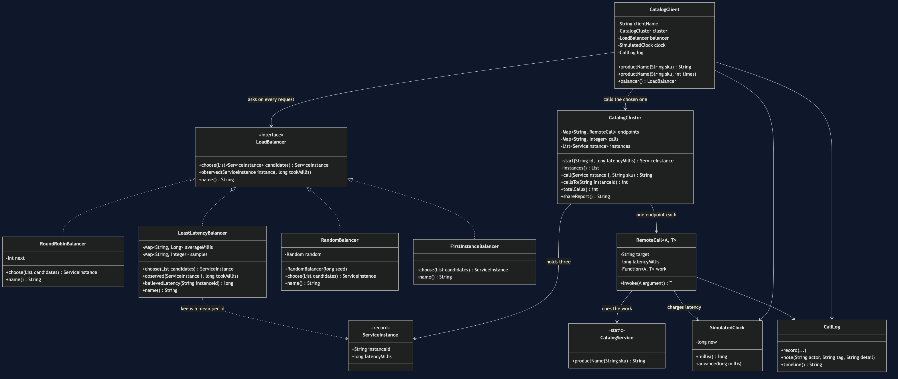
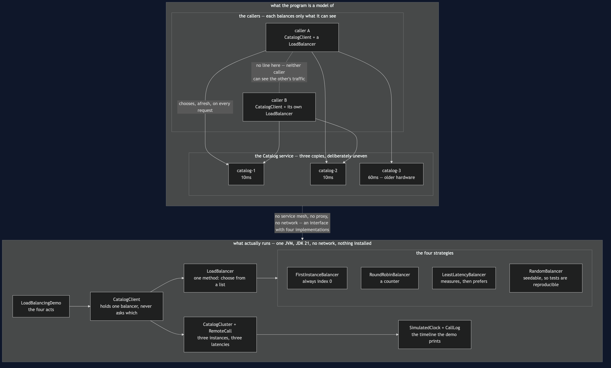
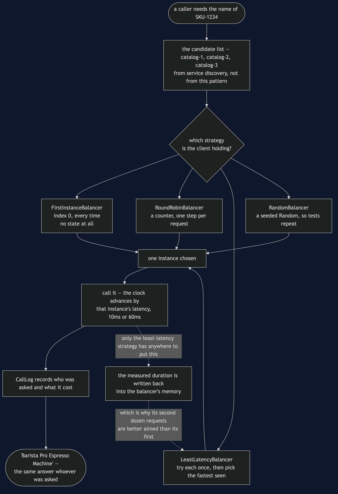
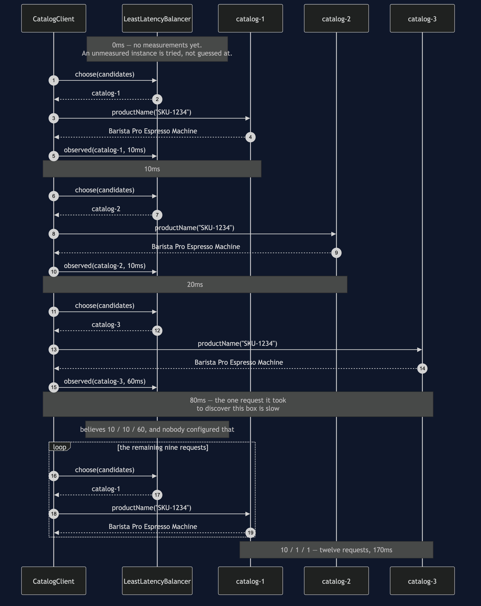
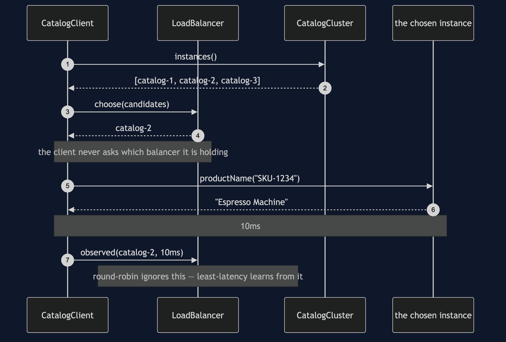
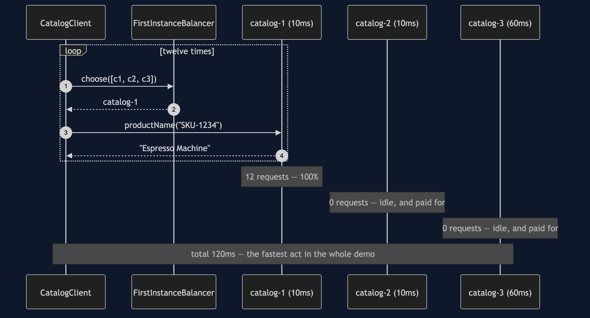
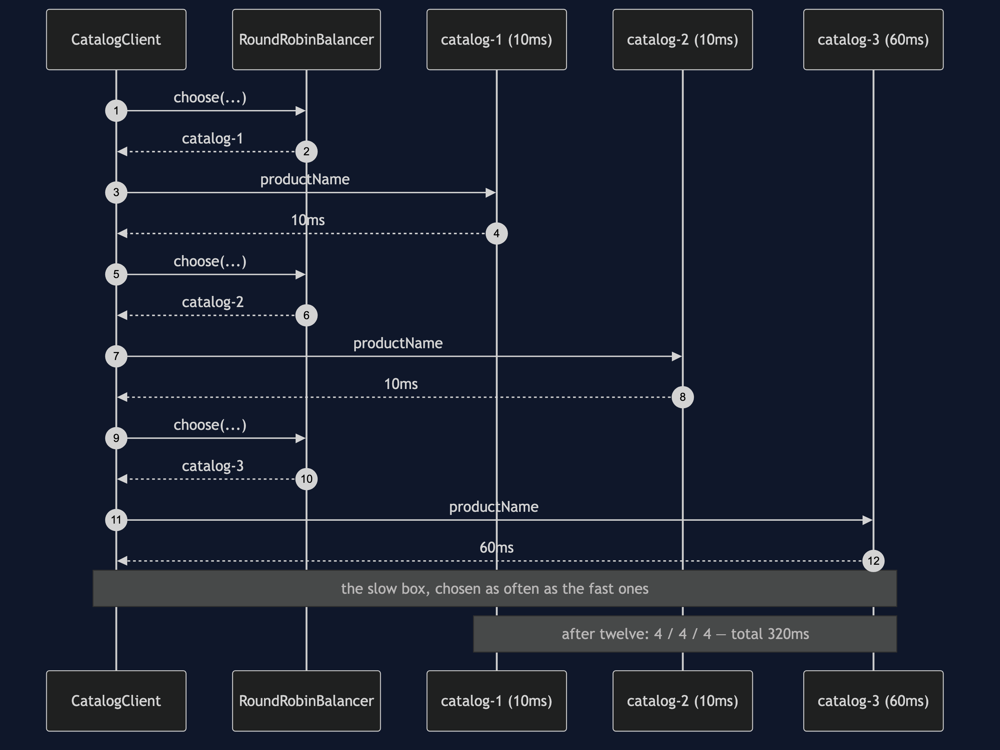
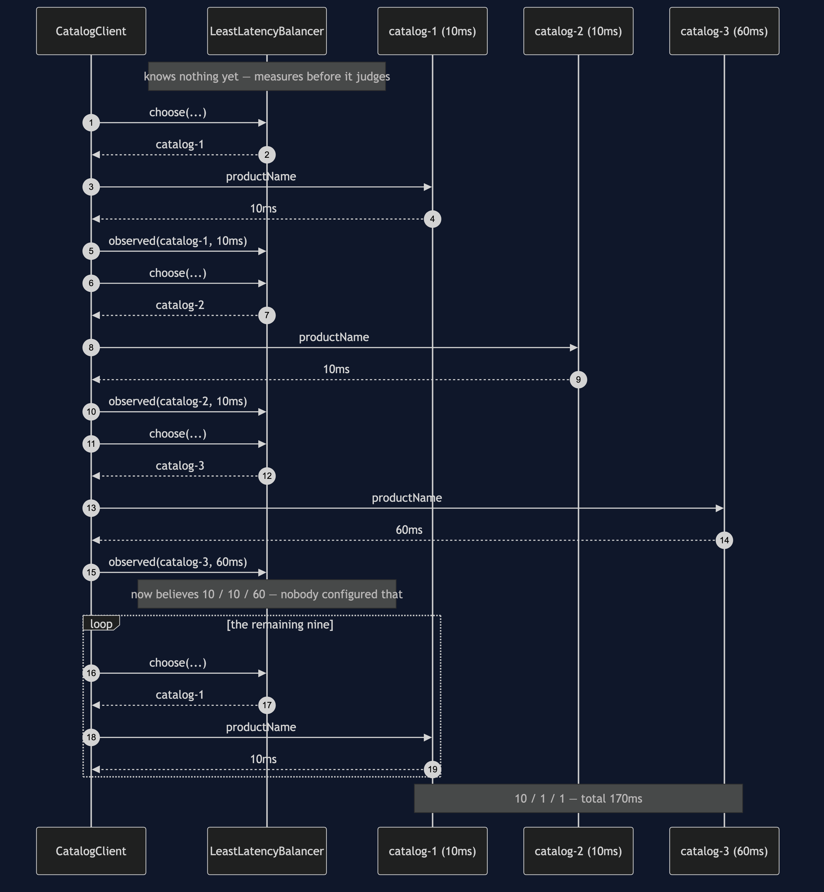
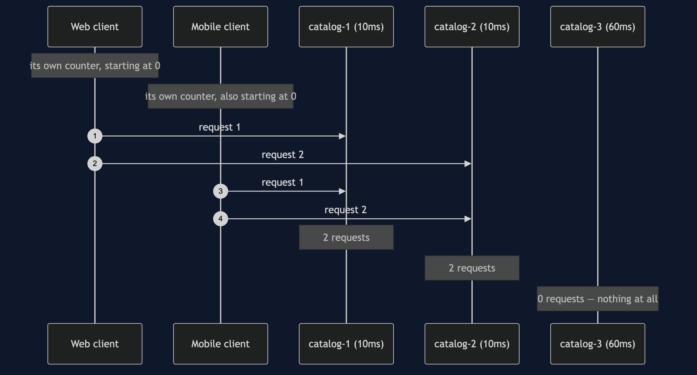

Client-Side Load Balancing
In plain words: when several identical copies of a service are running, the caller picks which copy to talk to — and it picks again for every single request.
Everyday analogy: you walk into a supermarket with six tills open. Nobody directs you. You look along the row, see which queue is shortest, and join it. You are doing the balancing yourself, from where you are standing, with your own eyes — and you do it afresh every time you shop. That is this pattern. The alternative is a single member of staff at the head of all six queues sending each shopper to a till; that works too, and it is the server-side answer we come back to at the end.
In the shop, the copies are three instances of the Catalog service. The service discovery pattern told the caller that all three exist. This pattern is the very next question: now that I know about three, which one do I ask?
The deliberately uneven cluster
Two of the three Catalog instances answer in 10 milliseconds. The third takes 60, because it is on older hardware. Real clusters look like this much more often than the diagrams admit — and it is what makes the choice interesting, because a strategy that is fair is not automatically a strategy that is fast.
What the demo prints
Four acts, each sending the same twelve requests to the same three instances, differing only in who gets asked.
1. Always the first on the list
catalog-1 12 requests (100%) 10ms each
catalog-2 0 requests ( 0%) 10ms each
catalog-3 0 requests ( 0%) 60ms each
12 requests took 120ms in totalThis is what you get by writing instances.get(0) and moving on. Read the timing line again: 120ms, faster than every other act. It is not slow. That is exactly why nobody catches it. The cost is not on the clock — it is that the shop bought three instances and is running on one, and when catalog-1 falls over it takes every request with it.
2. Round-robin: take turns
catalog-1 4 requests (33%) 10ms each
catalog-2 4 requests (33%) 10ms each
catalog-3 4 requests (33%) 60ms each
12 requests took 320ms in totalA perfectly even split, and nearly three times the total time. Round-robin faithfully sends a third of the shop's traffic to the slowest machine it owns, because round-robin does not know what "slow" means. It is still the right default: it needs no measurements, no configuration and no state beyond a counter.
3. Least latency: try each once, then prefer the fast ones
catalog-1 10 requests (83%) 10ms each
catalog-2 1 requests ( 8%) 10ms each
catalog-3 1 requests ( 8%) 60ms each
12 requests took 170ms in total
the client now believes: catalog-1 10ms, catalog-2 10ms, catalog-3 60ms170ms instead of 320. And notice the last line: nothing configured those numbers. The client measured them from its own requests. That is the whole argument for putting the balancer in the caller — "how slow has this instance been for me" is a question only the caller can answer, because the answer depends on which rack the caller sits in and what path its packets take.
The part that is easy to skip
Look at act 3 again. catalog-2 is exactly as fast as catalog-1 and got one request out of twelve. Ties broke towards whoever was measured first, so the client found a favourite and stayed with it. Now imagine a thousand clients all measuring the same cluster and all reaching the same conclusion: they stampede onto one instance, make it slow, then stampede off it together. A learning balancer needs a tie-break — a random pick among the near-equals — or it will herd. This is the honest cost of the cleverer strategy, and the reason round-robin remains the default.
4. Two clients, each taking perfect turns
catalog-1 2 requests (50%) 10ms each
catalog-2 2 requests (50%) 10ms each
catalog-3 0 requests ( 0%) 60ms eachTwo clients, each running round-robin, each behaving impeccably. Between them they left an instance with nothing to do. Neither client did anything wrong; a client-side balancer can only balance the traffic it can see, and it can only see its own. If the callers are not yours to change, put one balancer in front of the cluster and let it see every request. That is server-side balancing, it is simpler, and it is the right answer more often than this pattern's fans admit.
This pattern is Strategy
Not "like" Strategy — the same structure. LoadBalancer has one method, four interchangeable implementations, and CatalogClient holds one without ever asking which it holds. If you have done behavioural/strategy-pattern, you have written this interface before under another name.
What is new is the context. The decision is about machines rather than business rules, it is remade on every request rather than once per order, and the chooser has local knowledge that nothing in the middle of the network can see.
Run it
./gradlew run # the four acts above
./gradlew test # 21 testsThe tests are the proof
The interesting thing about these tests is what they do not assert. Every instance returns the same product name, so "the answer was right" proves nothing. What is pinned down instead is the shape of the traffic — who got how much, in what order, and what it cost:
LoadBalancerTest— round-robin splits twelve requests 4/4/4 and costs 320ms; least-latency costs 170ms and sends the slow box exactly one request; the client learns the latencies with nothing telling it; a seeded random balancer is reproducible; and two independent clients leavecatalog-3idle.FirstInstanceBalancerTest— every test in it passes. That is the lesson: a concentration bug does not announce itself with a failure. It gives the right answer, quickly, with one instance carrying everything and two sitting idle. One test shows it is indistinguishable from round-robin when only one instance is running, which is what the test environment usually looks like.DemoRunsTest— the demo is teaching material, so a test keeps it working.
No test sleeps. The clock is simulated, so a 320ms timeline costs no real time and the whole suite finishes in about a second.
One JVM, no infrastructure
There is no Docker here, no Spring, no service mesh and no network. The three "instances" are three RemoteCall objects over the same function, differing only in the latency they charge, and SimulatedClock only moves when something moves it. Everything you need is a JDK, and it runs on a plane.
Technologies and versions
Nothing here is a range and nothing is latest: a course that worked last year and does not work today is worse than one that never took the dependency.
| What | Version | Why it is here |
|---|---|---|
| Java | 21 | The repository standard, requested through the Gradle toolchain block |
| Gradle | 9.2.1 | The wrapper in this directory; no separate install needed |
| JUnit 5 | 5.10.2 | The 21 tests, through junit-bom so the Jupiter artefacts cannot disagree |
That is the entire list, and the short version of it is the point. This project has no runtime dependency at all — the dependencies block in build.gradle names nothing but JUnit, and JUnit is testImplementation. There is no Ribbon, no Spring Cloud LoadBalancer, no proxy and no container. Every one of the twelve projects in this category is built the same way, so a reader who can run one can run all of them, offline, with a JDK and nothing else.
Where this sits
Service discovery hands you a list; this pattern is the choice you make from it. The next one along, retry, is what you do when the instance you chose does not answer — and the two combine naturally, because the obvious retry is a retry against a different instance.
Learning Material
| Document | What it covers |
|---|---|
docs/problem-statement.md | Why candidates.get(0) is fast, correct, and still runs the shop on one machine out of three |
docs/load-balancing-pattern-explained.md | The pattern from a row of supermarket tills, the four strategies, herding, and why this is Strategy |
docs/class-diagram.md | The types, and the arrow that is missing — no client can see another client |
docs/architecture-diagram.md | Where the decision is taken, what the decider can see from there, and the uneven cluster |
docs/data-flow-diagram.md | One request end to end, and the feedback loop only one of the four strategies has |
docs/sequence-diagram.md | The learning strategy in call order: 80ms of tuition, then nine well-aimed requests |
docs/uml-diagram.md | One request step by step, then all four acts as sequences |
docs/animation.html | The same twelve requests being shared out, one step at a time, in a browser |
docs/prerequisites.md | What you need to know, what you explicitly do not, and how to get a JDK |
docs/session.md | A one-hour taught session with exercises |
docs/spec.md | The generated specification, with measured test counts and timings |
docs/youtube.md | Title, description and chapters for the video |
video/README.md | The video pipeline, the scene list, and how to rebuild it |
The pattern in one picture
The class diagram, and the thing to look for is an arrow that does not exist: no client has a line to another client. Everything act four costs follows from that.

What runs where
The lower half is the literal truth: one JVM, four small classes behind one interface. The upper half is what it models — two callers choosing for themselves, and three instances that are not equally fast.

How the data moves
One request end to end. The product code and the product name are the same whichever strategy runs; the interesting traffic is the choice, and the measurement that flows back into it afterwards.

Who calls whom, in order
The learning strategy in call order. The first three requests cost 80ms and buy the knowledge; the remaining nine spend it.

All five sequences
The full set from docs/uml-diagram.md, in the order that document argues them.
One. One request, step by step. Ask who is available, choose one, report back how long it took. Every act is this, twelve times.

Two. Always the first on the list. Twelve requests, one instance, 120ms — the fastest act in the demo, and the one to be suspicious of.

Three. Round-robin takes turns. A perfect 4/4/4 split and 320ms, because a third of the shop's traffic went to the slowest machine the shop owns.

Four. Least latency measures, then prefers. 170ms, the slow box asked exactly once, and a favourite found among two equally fast instances — which is how a thousand clients herd.

Five. Two well-behaved clients, one idle machine. Neither client did anything wrong. Between them they left an instance with nothing to do.

Video
The narrated walkthrough is built from video/scenes.py by video/build_video.sh. It runs about eighteen and a half minutes across sixteen scenes, and the rendered file is not committed — see the repository README for why — so producing it takes about ten minutes on macOS.
Also available with a framework
Load Balancing with Spring Cloud LoadBalancer Pattern reruns this idea on a real framework, and shows what the framework adds and where it can undo the pattern. Watch this project first.